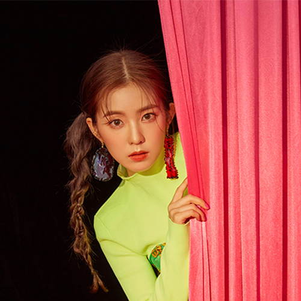

|

|
Nome Artístico: Irene (아이린)
Nome de Nascimento: Bae Joohyun (배주현)
Data de Nascimento: 29 de março de 1991
Signo do Zodíaco: Áries
Posição: Líder, Rapper Principal, Dançarina Líder, Vocalista de Apoio, Visual e Face.
Altura: 1,58m - 1,61m(aproximadamente)
Peso: 44kg(aproximadamente)
Tipo sanguíneo:A
|
Fatos sobre a Irene:
- Quando estava no 3° ano do ensino médio, Irene se mudou de Daegu para Seul, para ser trainee.
- Ela treinou na SM por 5 anos.
- Seus apelidos são Baechu, Hyun-ah, e Babyfaced Leader.
- Tem uma irmã mais nova.
- É muito tímida, mas entre as meninas é a mais brincalhona.
- Sua cor favorita é roxa, seu filme favorito é The Notebook, seu gênero de música favorito é 'rock
and ballad', sua cantora favorita é a BoA, seu número favorito é 43.
- Ela não pode comer frango porque sua cabeça dói e ela fica extremamente pálida.
- Sua especialidade é dança moderna.
- Ela é boa em cozinhar, especialmente sopa de algas.
- Irene é a 'mãe' do grupo.
- Muitos acham que ela é a mais nova, mas na verdade, ela é a mais velha.
- Em Daegu ela era conhecida por ser uma Ulzzang (ou seja, por ter um rosto bonito).
- Seu lema é "concentre-se na positividade".
- Quando está estressada, ela cria 'mapas mentais' para organizar seus pensamentos.
- É bastante flexível.
- Tem fetiche por bundas. Sua 'vítima' favorita é a Wendy.
- É muito insegura. Costuma perguntar as pessoas à seu redor se está fazendo algo bom ou ruim.
- Coleciona notas, revistas, e tudo o que é roxo.
- Gosta de vestir roupas confortáveis, como por exemplo, uma camisa solta.
- Não gosta de depender das pessoas.
- Desde que era jovem, nunca foi boa em contar seus problemas para os outros.
- Ela não é uma pessoa de se expressar muito, por isso ela aproveita para se expressar bastante quando está no palco.
- É chamada de "2nd Tiffany".
- Treinou com Krystal e Sulli, ambas do F(X).
- Ela atua em um K-Drama chamado 'Game Dev Girls', como uma das protagonistas.
- Antes de debutar, fazia parte da equipe da SM Rookies.
- Entrou na SM em 2009.
- Era próxima de Amber do F(X) durante seus dias como trainee.
- Sua cor oficial no Red Velvet é o Rosa.
 Voltar a Página Inicial
Voltar a Página Inicial